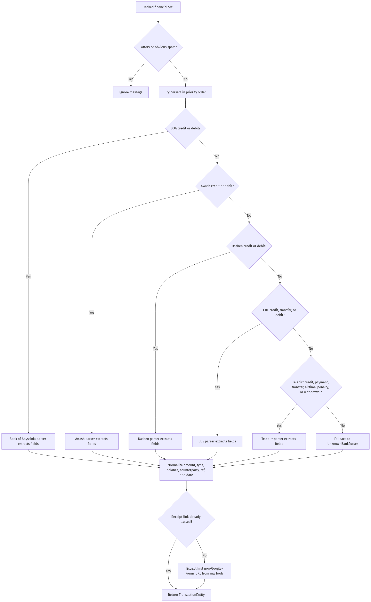
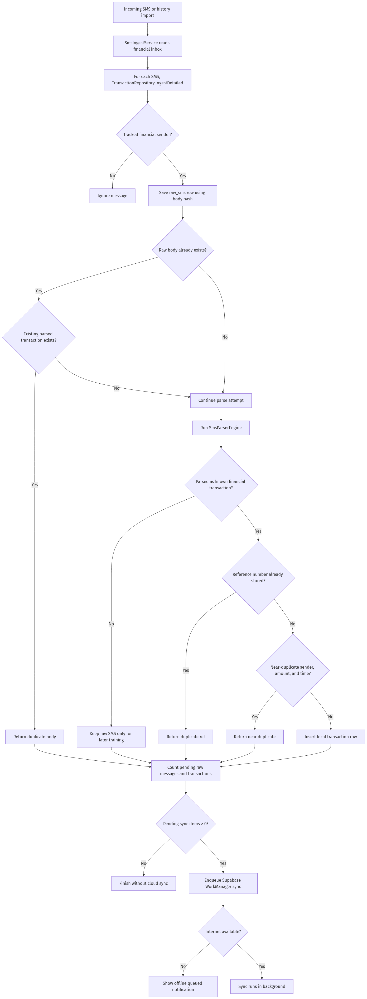
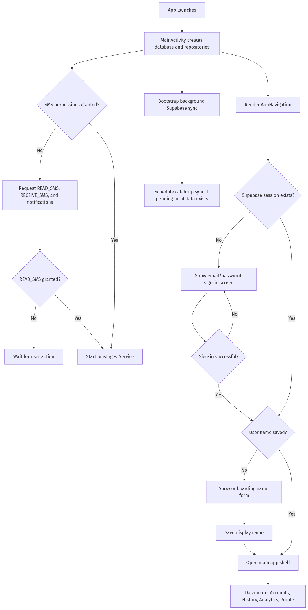

Separate quick overview from deep analysis
Home is meant to be immediate. It shows the user where they stand now. Insights is slower and more analytical. If both jobs were pushed into one screen, the product would feel cluttered and harder to scan.
Case Study
Finance Product / Ethiopia / SMS-first
An SMS-first personal finance app designed to help people understand spending and cashflow without the friction of manual expense tracking.
Most people do not lose control of their finances because of one large decision. They lose it in the small daily transactions they stop noticing. Finance Lore was built to turn scattered transaction SMS messages into a clearer picture of where money is going, what accounts hold it, and what patterns are starting to form over time.
01
Finance Lore is a personal finance product built around a simple reality: many users want better visibility into their money, but they do not want the overhead of manually logging every expense. In Ethiopia, this problem is even more constrained because reliable bank API access is not broadly available. For many users, SMS messages are the closest thing to a real-time financial record.
Instead of asking users to build a habit around manual entry, Finance Lore starts from the data they already generate. The app reads transaction SMS messages, parses them into structured records, and turns them into history, account views, and deeper insights.
The first version was shipped privately to a small group of testers on March 1, 2026. Since then, I have been collecting feedback and refining the product, with a current focus on improving categorization quality.
02
People get lost in daily minor transactions and struggle to build a bigger-picture understanding of their spending and cashflow.
Most finance tools assume one of two things:
For my target users, neither assumption held up well. Young professionals and people already overwhelmed by money management were not looking for another system to maintain. They wanted something lighter. At the same time, the local ecosystem made direct bank integrations unrealistic in the early stage. That meant the product had to be useful before ideal infrastructure existed.
03
The starting point for Finance Lore was not "how do I design a finance app?" It was "what is the lowest-friction path to useful financial clarity?"
In the Ethiopian context, SMS messages are often the only consistently accessible source of transaction data across banks and payment systems. They already contain the information users rely on:
That made SMS the right input layer. Finance Lore uses what already exists instead of demanding a new behavior from the user on day one.
04
The product is aimed at people who:
The strongest user segment so far has been young professionals who want clarity, not complexity.
05
At this stage, bank API integration was not a realistic foundation. The product had to create value without it.
Different providers structure messages differently. Some include current balance, some do not. Some are clearer about counterparties, some are not. Some mix receipts, fees, and account information in inconsistent ways.
Names are not normalized. Case changes, spacing changes, language habits vary, and the same destination can appear in multiple forms.
If users feel the app misread a transaction or oversimplified something important, trust drops fast. That meant the UI had to preserve visibility into the original data source.
06
The research process was informal but continuous. Rather than a single structured research phase, I spoke to people throughout the product's development and tried to get diversity in age, type of work, familiarity with finance apps, attention to personal finances, comfort with manual budgeting, and relationship to daily transaction volume.
These conversations were casual and happened across different stages of the build, but they were still useful for uncovering real behavior and real friction.
07
The current product goal is to improve categorization quality. Users can only build useful long-term insight from transaction history if the product can assign meaning to transactions with enough consistency. Parsing gets the data into the system. Categorization makes that data useful.
That means the most important product work is not just visual polish. It is improving how the system understands and groups spending behavior.
08
This distinction matters because I wanted the case study to reflect the real state of the product, not an idealized version of it.
09
A quick financial snapshot designed to answer: how much money do I currently have across sources, what happened today, and what is my short-term financial state?
A searchable transaction feed designed for scanning, filtering, and tracing activity over time.
A cleaner way to view linked banks and wallets without overloading Home or Insights.
The deeper analytical layer designed to help users understand patterns, category distribution, and broader financial movement over time.
Controls, source visibility, and account preferences.
This structure was intentional. I did not want one overloaded dashboard trying to do everything at once.
10
Home is meant to be immediate. It shows the user where they stand now. Insights is slower and more analytical. If both jobs were pushed into one screen, the product would feel cluttered and harder to scan.
Users needed a way to understand their money by source without turning the main experience into a dense bank-management interface.
Transaction detail screens preserve source information and expose the original SMS. Instead of asking users to fully trust the parser, the interface lets them verify what happened.
Categorization is handled through a semi-automatic approach using keyword matching, merchant mapping, and user-guided logic. The current direction is to improve quality without locking users into rigid category structures.
11

This flow matters because it reflects the actual product promise: not just collecting transactions, but making them legible.
12
A / Home
Instead of trying to explain everything, it answers the most immediate questions: what is my current total balance, which sources are contributing to it, what happened today, and how much came in, went out, or netted out this month?
The goal was to keep the screen useful within a few seconds of opening it. I wanted it to feel like a quick check-in, not a reporting dashboard.
Design note: This screen is intentionally summary-first. The deeper analysis is pushed out of the way so the app opens with clarity.
B / History
The challenge here was scanability. Financial feeds get dense quickly, especially when users receive many transactions per day. I needed a structure that allowed people to search, scan by day, compare inflows and outflows, spot repeated counterparties, verify balances after each transaction, and drill into details when something looked off.
The detail screen became one of the product's most important trust surfaces. It proves the system is not inventing meaning without evidence.

C / Accounts
Users with multiple banks or wallets need a way to understand their balances and activity by source. But that does not need to dominate the Home or Insights experience.
By separating it into its own section, the product gives users a cleaner mental model: Home for quick state, History for transactions, Accounts for source structure, and Insights for patterns.
Design note: This section is still evolving, but the core idea is stable: grouped financial sources should feel organized, not buried.
D / Insights
I did not want analytics for the sake of analytics. The question was always whether the screen helped the user understand their financial behavior more clearly.
That led to a few priorities: show meaningful monthly context, avoid decorative graphs with no action behind them, make category distribution legible, and surface uncategorized items as a product problem, not just a data problem.
Design note: This is where the system starts feeling less like a parser and more like a financial product.
E / Profile
This is where users manage account details, source visibility, and control how financial sources appear inside the app. Because source visibility affects trust and interpretation, these controls were treated as part of the product system rather than a generic settings page.
13
One of the hardest product problems was onboarding. The value of the product depends on access to financial SMS data, but asking for SMS access too early can feel intrusive. Asking too late can delay the moment the product becomes useful.
The onboarding had to do three things:
This is still an active area of refinement. The challenge is not just permission design. It is how quickly the user reaches a convincing first moment of value.

14
The biggest ongoing challenge is not styling, navigation, or dashboard layout. It is categorization.
To become genuinely useful over time, the app has to understand what transactions mean, not just that they happened. That gets complicated fast:
The current system uses a hybrid of keyword matching, merchant mapping, and semi-automatic logic.
Tester feedback pushed this even further. Some users asked for more flexible categorization with custom amounts. That turns categorization from a simple tagging problem into a financial modeling problem, which affects both UX and backend complexity.
Better categorization improves almost every downstream experience: cleaner insights, better trend visibility, stronger trust, more useful budgeting later, and more meaningful dashboard analysis.
15
Users wanted the product to not only explain money movement, but also help shape future behavior.
Some users wanted a way to track money they had loaned to other people, with the ability to view balances before and after repayment.
Some users did not want category rules to feel rigid. They wanted more freedom to classify transactions in a way that matched how they mentally model their money.
Some wanted a web dashboard with more advanced financial views, including exports and richer visualizations such as Sankey-style flows.
This feedback was valuable because it showed that users were not just asking for a prettier tracker. They were asking for a broader financial operating system.
16
The product uses both light and dark themes as a system exercise, but the goal was not just aesthetic variation. I wanted the interface to remain readable, calm, and financially legible in both modes.
A few principles guided the visual system:
Because the product deals with finance, visual confidence mattered. It had to feel precise without feeling cold.
17
The screenshots in this case study show a progression from earlier UI directions into a more structured product system.
As the project evolved, the work became less about isolated screens and more about answering system-level questions:
That shift was important. It moved the project away from being a finance app concept and toward becoming a real product with clearer logic.
18
This project taught me that financial UX is not mainly a dashboard design problem. It is a trust, structure, and interpretation problem.
Designing around imperfect SMS data forced better product decisions than designing around clean mock data would have.
Showing the original message was not just a detail. It became a core trust mechanism.
The quality of the analytical layer depends on how well the system understands transactions upstream.
Once testers saw the product as useful, they immediately started asking for budgeting, loan tracking, dashboards, and more advanced controls. That was a good sign.
19
The long-term vision is to help users build a deeper understanding of their financial state with very low ongoing effort.
20
Finance Lore started as a response to a local constraint, but it turned into a broader product question: how do you help people understand their finances without asking them to become full-time expense trackers?
The answer, for this version, was to start from the data already present in their lives, make it legible, preserve trust, and gradually build deeper financial understanding on top of it.
This is still in progress, but it is already a real product with real usage, real constraints, and a growing set of user-driven directions.
21
Let's talk about product systems, financial UX, and designing around real-world constraints.
If you want, I can also walk through the full flow, the design decisions behind each section, and what I'm improving next.